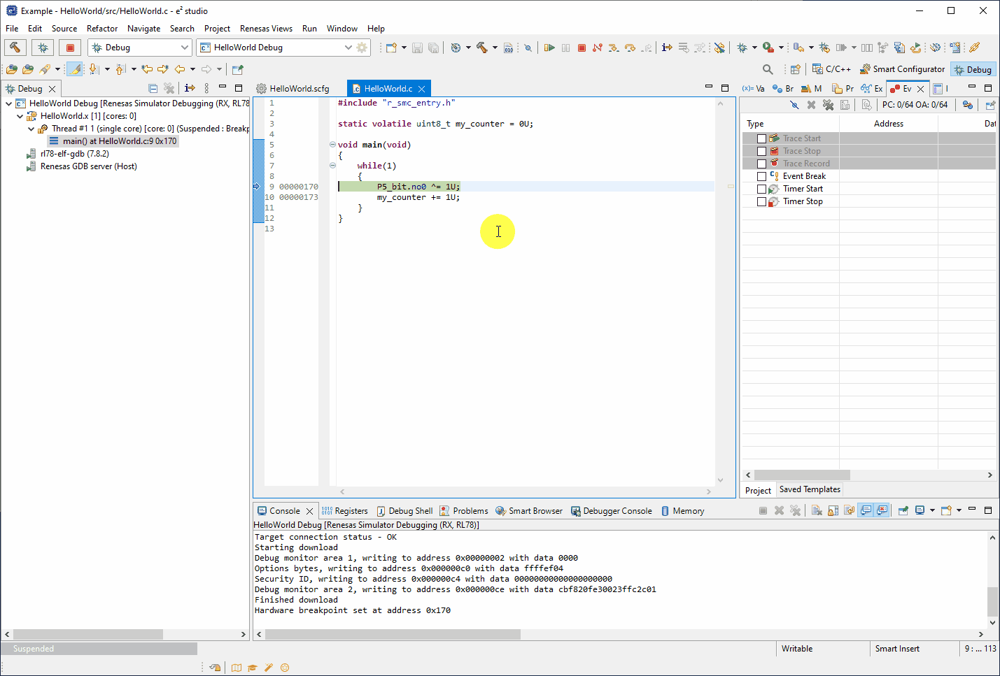
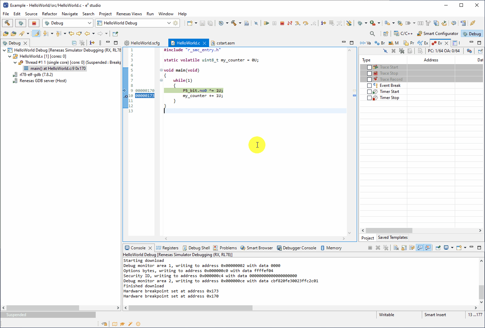
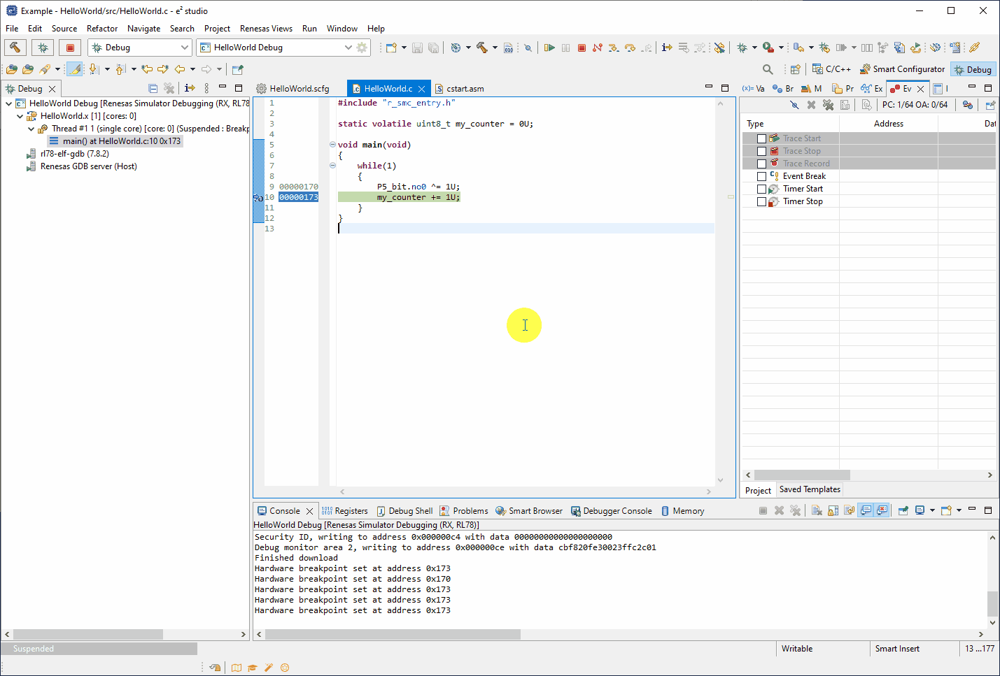
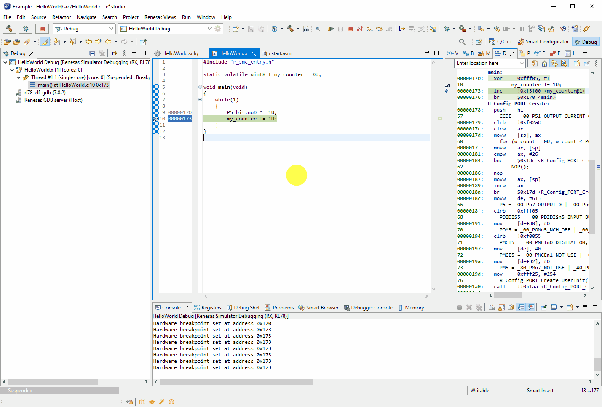
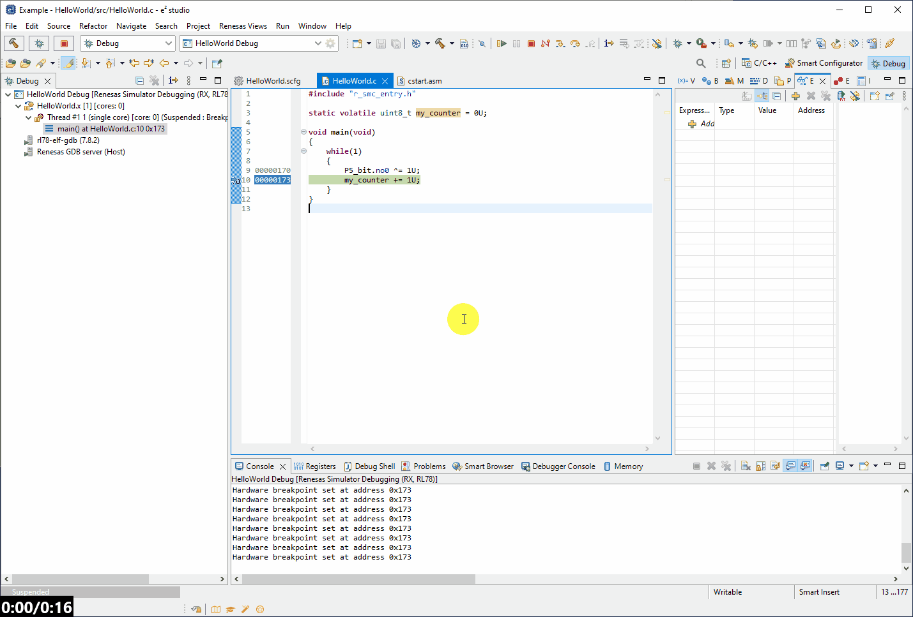

Here we will guide you through debugging a project for the RL78.
First ensure the project you wish to debug is active by clicking on it then select the debug icon.
Important:
If you do not have the RL78/G23 128p FPB hardware, when presented with the "Select Configuration" dialog then select HelloWorld Debug.
If you do have the RL78/G23 128p FPB hardware, when presented with the "Select Configuration" dialog then select HelloWorld HardwareDebug.
e2studio will promt you and ask if you would like to switch to the debug perspecive, answer in the affirmative i.e. "Switch"as this
will provide you with all the default tools and views used for debugging an embedded application.
The animation below shows this routine for the simulator, but the steps are the same for hardware debugging, with the only caveat being the selected debug configuration.

When the application first runs, it will pause on entry to the main function.
By double-clicking on the grey bar next to the code of interest we can insert a break point and halt execution when the CPU executes that line of code.

Now we can click the Run button, and once we hit this breakpoint we can step through the code using the step over or step into buttons.

And finally we can use nistruction stepping mode (Instruction Step button) to step through the assembly generated from the c code, to more granularly debug the program.

Now we can use something called the expression window, to observe global variables while the program is in the halted state,
so while we step through the code we can observe how variables are changing.
First open the expression window:
[Window] → [Show View] → [Other...]
Then search for expression and open this view,the view should appear somewhere in e2studio.

Now add the my_counter variable to the expression window by double-clicking the variable name to highlight, then holding the mouse down drag and drop the variable to the expression window.
You will see the my_counter variable appear with its current value (note this can only be done while the program is not executing - otherwise there will be no data present for the variable).

Now to avoid constantly pausing program execution manually, we trigger e2studio to periodically halt the CPU, read the memory and start it running again with
a feature call real-time refresh. this refresh's variable states in the expression window periodically.
There is a limitation to the period we can do this of 100ms - that is we cannot go quicker than this.
To enable real-time refresh, first disbale the breakpoint by double-clicking (this will allow the CPU to run freely).
Then in the expression window [Right Click] the my_counter variable → [Enable Real-time Refresh]
Again in the expression window [Right Click] the my_counter variable → [Real-time Refresh] → [Real-time Refresh Interval]
and in the dialog write 100 (fastest we can sample).
Finally click the Run button to start the program running and observe the counter change value in "real time".
The animation below shows this process.

Note this feature has a performance impact. Specifically in the case of RL78, the CPU must be halted by the debugger before the memory is read, which pauses execution of the program momentarily.